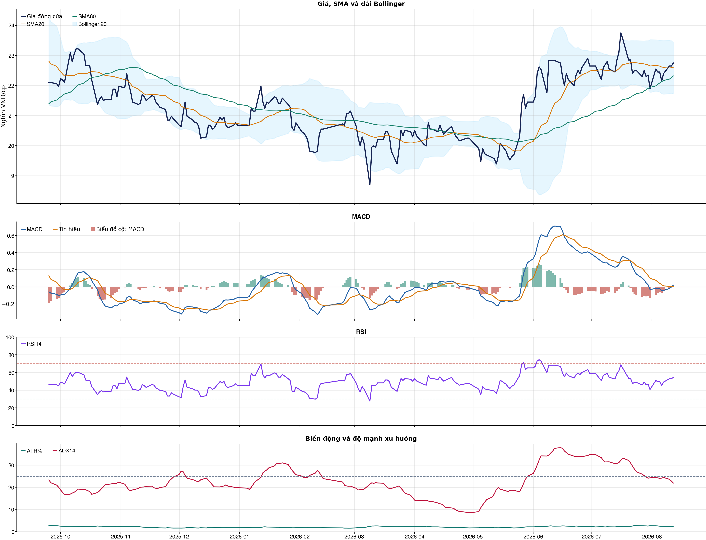
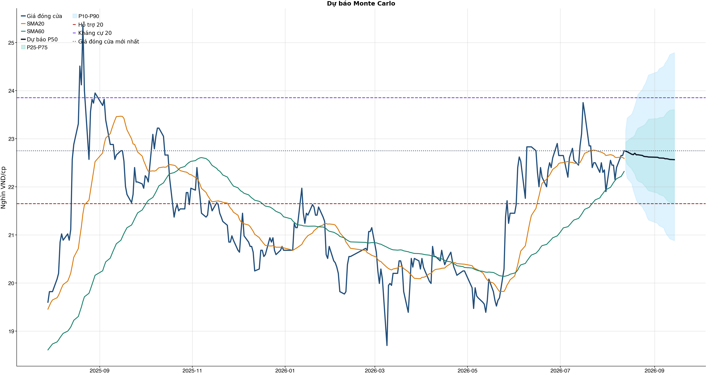
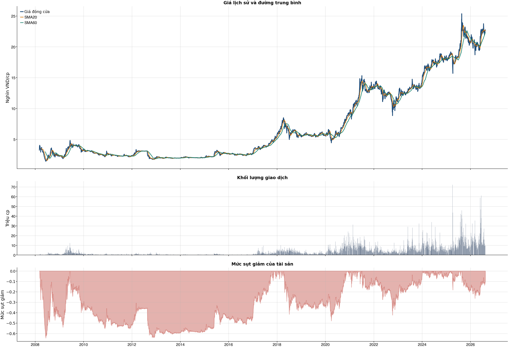

Kết quả chính
KPI đọc nhanh trước, chi tiết bấm mở bên dướiChi phí & vòng lệnh
Trọng tâm: tránh giao dịch nhiều làm phí ăn hết lợi thếBảng chính: turnover, gross, phí và net61 / 38 / 31 / 20 / 10 / 5 / 1
| Kịch bản | Cách chọn | Vòng | Gross trước phí | Phí | Net sau phí | Sharpe | Ghi chú |
|---|---|---|---|---|---|---|---|
| Gốc | Ngưỡng gốc ≥ 0.55 | 43 | +11.0% | 21.3% | -10.3% | -0.60 | Baseline 61 vòng nếu model phát tín hiệu nhiều. |
| Ngưỡng 0.58 | Chỉ vào lệnh khi xác suất ≥ 0.58 | 19 | +15.8% | 9.4% | +5.4% | 0.43 | Tăng ngưỡng để giảm vòng lệnh. |
| Ngưỡng 0.60 | Chỉ vào lệnh khi xác suất ≥ 0.60 | 13 | +16.9% | 6.5% | +9.6% | 0.80 | Tăng ngưỡng để giảm vòng lệnh. |
| Ngưỡng 0.62 | Chỉ vào lệnh khi xác suất ≥ 0.62 | 12 | +15.9% | 6.0% | +9.3% | 0.77 | Tăng ngưỡng để giảm vòng lệnh. |
| Giới hạn 10 vòng | Tối đa 10 vòng, ưu tiên xác suất cao hơn | 10 | +9.5% | 5.0% | +4.2% | 0.43 | Ngưỡng xác suất trong nhóm: 63.2%. |
| Giới hạn 5 vòng | Tối đa 5 vòng, ưu tiên xác suất cao hơn | 5 | +9.6% | 2.5% | +6.9% | 0.85 | Ngưỡng xác suất trong nhóm: 64.1%. |
| Giới hạn 1 vòng | Tối đa 1 vòng, ưu tiên xác suất cao hơn | 1 | +2.7% | 0.5% | +2.1% | 0.61 | Ngưỡng xác suất trong nhóm: 85.6%. |
Đọc bảng này từ trái sang phải: số vòng càng ít thì phí càng thấp, nhưng kết quả sau phí vẫn chỉ là kiểm thử OOS. Các dòng 10/5/1 giới hạn số vòng bằng xác suất model cao hơn, không phải chọn lệnh thắng sau khi biết kết quả và không tự biến NO_EDGE thành BUY.
Breakdown trước phí / sau phívì sao gross dương nhưng net âm
| Kịch bản trước chi phí | +11.0% | Gross PnL 10,976,480 VND; chưa trừ commission/slippage/tax. |
| Chi phí giao dịch | -21.3% | 43 vòng; entry 20.0 bps + exit 30.0 bps = 50.0 bps/vòng; tổng phí 19,955,541 VND. |
| Kịch bản sau chi phí | -10.3% | Net PnL -10,298,541 VND; gross - cost gap khoảng +21.3%. |
| Ngưỡng phí hòa vốn | 25.8 bps/vòng | Phí hiện tại 50.0 bps/vòng; cao hơn ngưỡng này thì gross dương vẫn có thể thành net âm. |
| Kết luận hành động | CHƯA CÓ LỢI THẾ (NO_EDGE) | Không mở vị thế mới; nếu đang giữ thì ưu tiên giảm/bán theo kỷ luật vì sau phí vẫn âm. |
| Cách cải thiện cần test | Giảm turnover | Hiện có 43 phiên active/43 vòng; nên test threshold 0.58/0.60/0.62 hoặc giữ nhiều phiên hơn. |
Kiểm thử chiến lược ngoài mẫu sau chi phí43 vòng
| Lợi nhuận ròng | -10.3% | 678 quan sát ngoài mẫu |
| Sharpe | -0.60 | Sau chi phí |
| Mức sụt giảm tối đa | -10.8% | 43 vòng giao dịch |
| Chi phí giả định | 50.0 bps | Một vòng mua và bán |
So sánh mô hìnhXGBoost vs Logistic
| XGBoost | 0.513 | AUC 0.522 |
| Logistic | 0.499 | AUC 0.527 |
| Đa số | 0.500 | Mốc so sánh |
Mức độ quan trọng của đặc trưngtop feature
| market_return_1d | 13.03 | Mức đóng góp |
| relative_strength_20d | 12.16 | Mức đóng góp |
| return_1d | 11.34 | Mức đóng góp |
| return_2d | 11.34 | Mức đóng góp |
| beta_60d | 10.33 | Mức đóng góp |
| return_5d | 10.29 | Mức đóng góp |
| range_pct | 10.27 | Mức đóng góp |
| bb_position_20 | 10.14 | Mức đóng góp |
Điều kiện phát hành tín hiệuCHƯA CÓ LỢI THẾ (NO_EDGE)
| AUC của mô hình | KHÔNG ĐẠT | Điều kiện phát hành tín hiệu |
| Độ chính xác cân bằng của mô hình | KHÔNG ĐẠT | Điều kiện phát hành tín hiệu |
| XGBoost vượt mô hình Logistic đối chứng | KHÔNG ĐẠT | Điều kiện phát hành tín hiệu |
| Xác suất tăng đạt ngưỡng | KHÔNG ĐẠT | Điều kiện phát hành tín hiệu |
| Bối cảnh kỹ thuật đạt ngưỡng | ĐẠT | Điều kiện phát hành tín hiệu |
| Tỷ lệ lợi nhuận/rủi ro đạt ngưỡng | ĐẠT | Điều kiện phát hành tín hiệu |
| Dữ liệu còn mới | ĐẠT | Điều kiện phát hành tín hiệu |
| Có khối lượng vị thế hợp lệ | ĐẠT | Điều kiện phát hành tín hiệu |
| Có kết quả kiểm thử chiến lược ngoài mẫu | ĐẠT | Điều kiện phát hành tín hiệu |
| Mẫu kiểm thử chiến lược đủ lớn | ĐẠT | Điều kiện phát hành tín hiệu |
| Kiểm thử chiến lược có lợi thế ròng | KHÔNG ĐẠT | Điều kiện phát hành tín hiệu |
Quản trị rủi rostop / target
| Rủi ro/lệnh | 1.0% | 1,000,000 VND |
| Mức dừng lỗ | 22.10 | Rủi ro mỗi cổ phiếu 0.77 |
| Mục tiêu 1 | 24.79 | Lợi nhuận/rủi ro 2.51 |
| Mục tiêu 2 | 24.79 | Dự báo/kháng cự |
Kỹ thuật
Biểu đồ mở sẵn, bảng tín hiệu thu gọnBiểu đồ kỹ thuật

Tín hiệu kỹ thuậtchi tiết
| Xu hướng | Tích cực | Giá nằm trên SMA20 và SMA60. |
| MACD | Tích cực | MACD trên signal, histogram dương. |
| RSI14 | Trung tính | RSI 54.4. |
| Bollinger | Ổn định | Giá nằm trong dải Bollinger. |
| ADX | Đi ngang | ADX 21.9. |
| Thanh khoản | Thấp | 0.68 lần trung bình. |
| Stochastic | Cực trị | %K 95.0, %D 83.6. |
Cơ bản & tin tức
Các bảng dài để trong nút bungPhân tích cơ bảnBCTC/tỷ số
| P/E | 8.39 | 2026-Q2 |
| P/B | 1.32 | 2026-Q2 |
| P/S | 3.80 | 2026-Q2 |
| ROE | 16.3% | 2026-Q2 |
| ROA | 1.5% | 2026-Q2 |
| Gross margin | 68.1% | 2026-Q2 |
| Net margin | 45.3% | 2026-Q2 |
| Debt/Equity | 9.75 | 2026-Q2 |
| Current ratio | 0.00 | 2026-Q2 |
| NPL | 1.0% | 2026-Q2 |
| CASA | 20.6% | 2026-Q2 |
| Dividend yield | 0.0% | 2026-Q2 |
| Market cap | 131,470.2 tỷ | 2026-Q2 |
| Revenue Growth | -1.6% | 2026-Q2 YoY |
| Profit Growth | -12.1% | 2026-Q2 YoY |
| CAPEX | -95.1 tỷ | 2026-Q2 |
| Lợi nhuận sau thuế | 4,292.5 tỷ | 2026-Q2 |
| Tổng tài sản | 1,067,845.1 tỷ | 2026-Q2 |
| Vốn chủ sở hữu | 99,314.5 tỷ | 2026-Q2 |
Tin tức doanh nghiệpresearch only
| Trạng thái | Có dữ liệu | research_only |
| Nguồn / số bài | VCI | 50 |
| Bài đủ timestamp | 50 | Chỉ các bài này mới được phép dùng point-in-time |
| Sentiment 5 ngày | 0.00 | 0.0 bài trước cutoff |
| Phương pháp | keyword_heuristic_v1 | Research only; chưa dùng làm tín hiệu mua/bán |
Dự báo
Kịch bản giá và lịch sử drawdownDự báo ngắn hạn20 phiên
| 2026-08-13 | 22.74 | P10 22.35 / P90 23.17 |
| 2026-08-14 | 22.73 | P10 22.18 / P90 23.43 |
| 2026-08-17 | 22.68 | P10 22.07 / P90 23.51 |
| 2026-08-18 | 22.67 | P10 21.93 / P90 23.59 |
| 2026-08-19 | 22.70 | P10 21.83 / P90 23.68 |
| 2026-08-20 | 22.66 | P10 21.73 / P90 23.79 |
| 2026-08-21 | 22.67 | P10 21.66 / P90 23.92 |
| 2026-08-24 | 22.65 | P10 21.58 / P90 24.03 |
Lịch giao dịch Việt Nam dùng cho forecastkhông tính T7/CN/lễ
VN stock calendar: loại Thứ Bảy/Chủ Nhật và các ngày nghỉ 2026 đã công bố; ngày làm bù Thứ Bảy không được tính là phiên giao dịch chứng khoán.
Ngày nghỉ đã loại: 2026-01-01, 2026-01-02, 2026-02-16, 2026-02-17, 2026-02-18, 2026-02-19, 2026-02-20, 2026-04-27, 2026-04-30, 2026-05-01, 2026-08-31, 2026-09-01, 2026-09-02
Nếu HOSE/HNX/UPCoM công bố nghỉ đột xuất, cần thêm ngày đó vào config `market_holidays` rồi chạy lại report.
Biểu đồ dự báo

Lịch sử giá và mức sụt giảm

Báo cáo dùng để học tập và lập kịch bản, không phải khuyến nghị mua/bán.
Phân tích AI có kiểm chứngbấm mở
Trạng thái quyết định: NO_EDGE
Tóm tắt: ML decision hiện giữ nguyên NO_EDGE. News Reader đã trích đoạn có nguồn của 2 bài để phân loại chủ đề (co_tuc_va_hanh_dong_doanh_nghiep: 1, vi_mo: 1, nganh: 1, rui_ro: 1), nhưng các trích đoạn này không tạo bằng chứng mới cho quyết định đầu tư.
Kỹ thuật: Artifact kỹ thuật: bias Hồi phục / nghiêng tăng; điểm 4. Chi tiết artifact: Xu hướng: Tích cực (Giá nằm trên SMA20 và SMA60.); MACD: Tích cực (MACD trên signal, histogram dương.); RSI14: Trung tính (RSI 54.4.); Bollinger: Ổn định (Giá nằm trong dải Bollinger.); ADX: Đi ngang (ADX 21.9.); Thanh khoản: Thấp (0.68 lần trung bình.); Stochastic: Cực trị (%K 95.0, %D 83.6.)
Cơ bản: Artifact cơ bản: ACB; kỳ 2026-Q2; P/E 8.39; P/B 1.32; ROE 16.3%; ROA 1.5%; Debt/Equity 9.75; Revenue Growth -1.6%; Profit Growth -12.1%.
Tin tức: Đã đọc trích đoạn giới hạn của 2 bài; phân nhóm rule-based: co_tuc_va_hanh_dong_doanh_nghiep: 1, vi_mo: 1, nganh: 1, rui_ro: 1. Tác động cần kiểm chứng: Kiểm tra ngày GDKHQ, tỷ lệ, nguồn chi trả và nguy cơ pha loãng trước khi đánh giá tác động. Đối chiếu thời điểm công bố và kênh tác động lãi suất/tỷ giá với mô hình kinh doanh. So sánh tín hiệu ngành với thị phần, nhu cầu và đối thủ trước khi suy luận cho riêng doanh nghiệp. Xác minh công bố chính thức, phạm vi ảnh hưởng và khả năng định lượng rủi ro. Đây không phải sentiment hay dự báo tác động giá.
Live research: Live snapshot lấy lúc 2026-08-12T17:05:23.238516+00:00; News Reader đọc được 2 bài. ML có 5 lý do guard và vẫn là NO_EDGE. Không dùng tin live để train/backtest.
Rủi ro cần kiểm chứng
- ML guard: AUC 0.522 < 0.540
- ML guard: Balanced accuracy 0.513 < 0.520
- ML guard: XGBoost chưa vượt logistic baseline: AUC XGBoost=0.5217332843299838, AUC logistic=0.5274523337845227
- ML guard: Probability 48.9% < 55.0%
- ML guard: Lợi thế OOS ròng không đạt: return=-0.10298540999999994, Sharpe=-0.6023229276200178
- News Reader: Kiểm tra ngày GDKHQ, tỷ lệ, nguồn chi trả và nguy cơ pha loãng trước khi đánh giá tác động.
- News Reader: Đối chiếu thời điểm công bố và kênh tác động lãi suất/tỷ giá với mô hình kinh doanh.
- News Reader: So sánh tín hiệu ngành với thị phần, nhu cầu và đối thủ trước khi suy luận cho riêng doanh nghiệp.
- News Reader: Xác minh công bố chính thức, phạm vi ảnh hưởng và khả năng định lượng rủi ro.
- Chỉ lưu trích đoạn giới hạn để kiểm chứng nguồn; không lưu hay hiển thị toàn văn bài báo.
- Phân nhóm là keyword rule-based để định tuyến research, không phải sentiment hay dự báo tác động giá.
- Dữ liệu News Reader chỉ phục vụ research/report; không dùng làm feature train/backtest khi chưa có lịch sử available_at point-in-time.
- Tin live/trích đoạn cần mở URL gốc để kiểm chứng bối cảnh, số liệu và thời điểm trước khi sử dụng.
Bằng chứng
- ML decision artifact: NO_EDGE. AUC 0.522 < 0.540
- ML decision artifact: NO_EDGE. Balanced accuracy 0.513 < 0.520
- ML decision artifact: NO_EDGE. XGBoost chưa vượt logistic baseline: AUC XGBoost=0.5217332843299838, AUC logistic=0.5274523337845227
- ML decision artifact: NO_EDGE. Probability 48.9% < 55.0%
- ML decision artifact: NO_EDGE. Lợi thế OOS ròng không đạt: return=-0.10298540999999994, Sharpe=-0.6023229276200178
- News Reader [Nhịp sống kinh doanh]: 3 cổ phiếu được khối ngoại “rót” gần 500 tỷ đồng trong phiên VN-Index bứt phá - Nhịp sống kinh doanh | nhóm: co_tuc_va_hanh_dong_doanh_nghiep, vi_mo, nganh, rui_ro (2026-08-12T08:54:06+00:00)
- News Reader [Fili.vn]: Ngày 06/08/2026: 10 cổ phiếu nóng dưới góc nhìn PTKT của Vietstock - Fili.vn | nhóm: khác (2026-08-06T02:00:48+00:00)
Báo cáo chỉ tổng hợp artifact đã lưu để nghiên cứu; không phải khuyến nghị mua/bán. Quyết định và vị thế vẫn bị khóa theo signal_decision.json.
Tác động của tin lên model
Trạng thái: research_only · Áp vào signal chính: not_applied
Khuyến nghị hệ thống: Chỉ hiển thị như shadow/research, chưa thay signal chính.
Gate chưa đạt: min_articles_60, min_feature_rows_30, news_feature_gain_positive, auc_at_least_0_55, balanced_accuracy_at_least_0_52
News feature importance
| Feature tin | Gain |
|---|---|
| news_count_lookback | 0.000 |
| news_sentiment_mean_lookback | 0.000 |
| news_positive_count_lookback | 0.000 |
| news_negative_count_lookback | 0.000 |
| news_earnings_count_lookback | 0.000 |
| news_corporate_action_count_lookback | 0.000 |
| news_legal_count_lookback | 0.000 |
| news_source_count_lookback | 0.000 |
Điều kiện bật news vào signal chính
| Gate | Kết quả |
|---|---|
| min_articles_60 | Chưa đạt |
| min_feature_rows_30 | Chưa đạt |
| news_feature_gain_positive | Chưa đạt |
| auc_at_least_0_55 | Chưa đạt |
| balanced_accuracy_at_least_0_52 | Chưa đạt |
CSV dựng từ live snapshots chỉ phù hợp smoke test/research; cần lịch sử available_at dài hơn trước khi dùng production.
Tin web đã lấyheadline + nguồn
News Reader: bài đã đọc và trích đoạnbấm mở trích đoạn
| Nguồn | Tiêu đề | Nhóm | Thời điểm | Trích đoạn đã đọc | Link |
|---|---|---|---|---|---|
| Nhịp sống kinh doanh | 3 cổ phiếu được khối ngoại “rót” gần 500 tỷ đồng trong phiên VN-Index bứt phá - Nhịp sống kinh doanh | co_tuc_va_hanh_dong_doanh_nghiep, vi_mo, nganh, rui_ro | 2026-08-12T08:54:06+00:00 | Xem trích đoạn23:42 - CTCK điểm tên 10 cổ phiếu triển vọng tích cực, phù hợp để "xuống tiền" nắm giữ trung, dài hạn 23:02 - General Motors củng cố chuỗi cung ứng linh kiện với thỏa thuận 4,5 tỷ USD 22:57 - Một doanh nghiệp sắp "phát" 3.000 đồng/cp, hơn thập kỷ bền bỉ trả cổ tức tiền mặt cao 22:25 - Lạm phát tại Mỹ tiếp tục hạ nhiệt trong tháng 7/2026 21:23 - IEA tiếp tục hạ dự báo nhu cầu dầu mỏ năm 2026 20:51 - Iran mất 95 triệu m³ khí đốt tự nhiên Giao dịch của khối ngoại là điểm cộng khi mua ròng khoảng 336 tỷ đồng cổ phiếu trên toàn thị trường. Lực kéo từ cổ phiếu Vingroup giúp VN-Index bứt phá mạnh. Khép lại phiên 12/8, VN-Index tăng gần 20 điểm lên còn 1.793 điểm. Thanh khoản trên HoSE đạt hơn 14.000 tỷ đồng. Tại chiều mua, cổ phiếu VIC được khối ngoại mua mạnh nhất trên HOSE với giá trị hơn 189 tỷ đồng. Theo sau, VIX và SSI là mã tiếp theo được gom mạnh 152 và 141 tỷ đồng. Ở chiều ngược lại, VHM dẫn đầu danh sách bị bán ròng với 67 tỷ đồng. Theo sau là ACB và TCB, lần lượt bị bán ròng 60 tỷ đồng và 52 tỷ đồng. Tại chiều mua, IDC được mua ròng mạnh nhất với giá 6 tỷ đồng. Bên cạnh đó, CEO xếp tiếp theo trong sách mua ròng mạnh trên HNX với 5 tỷ đồng. Ngoài ra, khối ngoại cũng chi vài tỷ đồng để gom ròng PVS, KSF, NVB. Chiều ngược lại, SHS là mã chịu áp lực bán ròng của khối ngoại với giá trị 0,3 tỷ đồng; theo sau PVI TSB, DP3, bị bán từ vài trăm triệu đồng. Chiều mua, cổ phiếu ABB được khối ngoại mua 3 tỷ đồng. Theo sau, TIN và DRI cũng được mua ròng mỗi mã vài trăm triệu đồng. Ngược chiều, QNS bị khối ngoại bán ròng 2 tỷ đồng. Ngoài ra khối ngoại cũng bán ròng tại , ACV, ABI, , , , ,... Phiên 10/8: Khối ngoại đảo chiều bán ròng, hai cổ phiếu bluechips bị "xả" hơn 600 tỷ đồng Phiên 11/8: Khối ngoại tiếp đà bán ròng gần 800 tỷ đồng, một cổ phiếu ngân hàng bị "xả" mạnh Một thế lực bất ngờ "tung" hơn 1.000 tỷ đồng gom cổ phiếu Việt Nam phiên 12/8 Nhóm tự doanh CTCK mua ròng mạnh nhất tại NVL và SBT. Chứng khoán Hàn Quốc thăng hoa, dẫn dắt đà tăng của khu vực châu Á Chứng khoán châu Á đa phần tăng điểm trong phiên 12/8, với tâm điểm là đà phục hồi mạnh mẽ của thị trường Hàn Quốc nhờ nhóm cổ phiếu công nghệ. Thị trường tăng điểm, VN-Index áp sát mốc 1.800 điểm Với một một tăng điểm tích cực, chỉ số VN-Index ghi nhận trạng thái cao nhất kể từ sau phiên giao dịch 17/7. 3 cổ phiếu được khối ngoại “rót” gần 500 tỷ đồng trong phiên VN-Index bứt phá Tiếp tục làm cổ đông lớn | Mở nguồn |
| Fili.vn | Ngày 06/08/2026: 10 cổ phiếu nóng dưới góc nhìn PTKT của Vietstock - Fili.vn | khác | 2026-08-06T02:00:48+00:00 | Xem trích đoạnNgày 06/08/2026: 10 cổ phiếu nóng dưới góc nhìn PTKT của Vietstock Các cổ phiếu nóng được phân tích trong báo cáo của Phòng Tư vấn Vietstock gồm: ACB , BVH , EIB , MSN , PAN , OCB , TPB , VPB , VIC , VNM. Các cổ phiếu này được chọn lọc theo vốn hóa thị trường, thanh khoản, mức độ quan tâm của nhà đầu tư... Các phân tích dưới đây có thể phục vụ cho mục đích tham khảo trong ngắn hạn cũng như dài hạn. Giá cổ phiếu ACB giằng co mạnh trong phiên giao dịch ngày 05/08/2026 với sự xuất hiện của mẫu hình nến Doji. Khối lượng giao dịch đang nằm dưới mức trung bình 20 ngày cho thấy nhà đầu tư khá thận trọng. Chỉ báo Stochastic Oscillator đảo chiều và cắt lên trên đường signal nên triển vọng ngắn hạn được cải thiện. Giá cổ phiếu BVH quay lại đà tăng trong phiên giao dịch ngày 05/08/2026 và bám vào Upper Band của Bollinger Bands. Chỉ báo MACD đã cắt lên đường signal. Nếu trong các phiên tới chỉ báo này vượt ngưỡng 0 thì triển vọng ngắn hạn sẽ càng lạc quan. Giá cổ phiếu EIB giằng co trong phiên giao dịch ngày 05/08/2026 với sự xuất hiện của mẫu hình Inverted Hammer. Giá tăng 5 trong 7 phiên giao dịch gần nhất cho thấy sự lạc quan đang quay trở lại. Mặt khác, chỉ báo Stochastic Oscillator và MACD đều đi lên sau khi cắt lên trên đường signal nên triển vọng ngắn hạn chuyển biến tích cực. Giá test lại đáy cũ tháng 04/2025 (tương đương vùng 15,500-17,500) và đã nhận được sự hỗ trợ mạnh. Trong phiên giao dịch ngày 05/08/2026, giá cổ phiếu MSN giảm trở lại và xuất hiện mẫu hình nến Bearish Engulfing. Giá đang nằm trên đường Middle của Bollinger Bands nên sẽ nhận được sự hỗ trợ từ ngưỡng này trong thời gian tới. Chỉ báo Stochastic Oscillator và MACD đều đã cắt lên trên đường signal nên triển vọng ngắn hạn được cải thiện. Giá cổ phiếu PAN giảm nhẹ trong phiên giao dịch ngày 05/08/2026 nhưng khối lượng giao dịch đang nằm trên mức trung bình 20 ngày. Đáy cũ tháng 11/2025 (tương đương vùng 19,500-21,000) sẽ tiếp tục đóng vai trò hỗ trợ quan trọng trong thời gian tới. Chỉ báo MACD đảo chiều và cắt lên trên đường signal nên triển vọng ngắn hạn được cải thiện. Giá cổ phiếu OCB quay lại đà tăng trong phiên giao dịch ngày 05/08/2026 và vượt đường SMA 100 ngày. Khối lượng giao dịch đang tiến sát mức trung bình 20 ngày cho thấy nhà đầu tư đã bớt thận trọng. Chỉ báo Stochastic Oscillator tăng và cắt lên đường signal nên rủi ro ngắn hạn được hạn chế. Giá cổ phiếu TPB tăng trong phiên giao | Mở nguồn |
Chi tiết báo cáo tài chínhbảng dài
Kết quả kinh doanh — 4 kỳ gần nhất
Hiển thị 35 dòng đầu; mở CSV đầy đủ.
| Khoản mục | 2026-Q2 | 2026-Q1 | 2025-Q4 | 2025-Q3 |
|---|---|---|---|---|
| Tổng lợi nhuận/lỗ trước thuế | 5,366.9 tỷ | 5,368.1 tỷ | 3,467.0 tỷ | 5,381.8 tỷ |
| Chi phí thuế TNDN hiện hành | -1,076.6 tỷ | -1,074.0 tỷ | -663.3 tỷ | -1,081.5 tỷ |
| Chi phí thuế TNDN hoãn lại | 2.2 tỷ | 26.2 tỷ | -19.1 tỷ | -19.7 tỷ |
| Chi phí thuế thu nhập doanh nghiệp | -1,074.4 tỷ | -1,047.8 tỷ | -682.3 tỷ | -1,101.2 tỷ |
| Lợi nhuận sau thuế | 4,292.5 tỷ | 4,320.4 tỷ | 2,784.7 tỷ | 4,280.6 tỷ |
| Lợi ích của cổ đông thiểu số | 0.0 tỷ | 0.0 tỷ | 0.0 tỷ | 0.0 tỷ |
| Cổ đông của Công ty mẹ | 4,292.5 tỷ | 4,320.4 tỷ | 2,784.7 tỷ | 4,280.6 tỷ |
| Lãi cơ bản trên cổ phiếu (VND) | 0.0 tỷ | 0.0 tỷ | 0.0 tỷ | 0.0 tỷ |
| Lãi trên cổ phiếu pha loãng (VND) | 0.0 tỷ | 0.0 tỷ | 0.0 tỷ | 0.0 tỷ |
| Thu nhập lãi và các khoản thu nhập tương tự | 20,080.1 tỷ | 17,220.4 tỷ | 16,080.4 tỷ | 15,049.4 tỷ |
| Chi phí lãi và các chi phí tương tự | -12,295.4 tỷ | -10,231.2 tỷ | -8,987.2 tỷ | -8,279.7 tỷ |
| Thu nhập lãi thuần | 7,784.7 tỷ | 6,989.2 tỷ | 7,093.3 tỷ | 6,769.7 tỷ |
| Thu nhập từ dịch vụ | 1,273.0 tỷ | 1,451.7 tỷ | 1,381.9 tỷ | 1,317.8 tỷ |
| Chi phí dịch vụ | -447.6 tỷ | -458.8 tỷ | -487.7 tỷ | -522.3 tỷ |
| Lãi/Lỗ thuần từ hoạt động dịch vụ | 825.4 tỷ | 992.9 tỷ | 894.3 tỷ | 795.4 tỷ |
| Lãi/(lỗ) thuần từ hoạt động kinh doanh ngoại hối và vàng | 293.0 tỷ | 482.9 tỷ | 137.1 tỷ | 449.1 tỷ |
| Lãi/(lỗ) thuần từ mua bán chứng khoán kinh doanh | 41.3 tỷ | 185.6 tỷ | 46.6 tỷ | 367.4 tỷ |
| Lãi/(lỗ) thuần từ mua bán chứng khoán đầu tư | -21.3 tỷ | -0.6 tỷ | -47.8 tỷ | -0.0 tỷ |
| Thu nhập khác | 380.7 tỷ | 329.2 tỷ | 410.2 tỷ | 370.7 tỷ |
| Chi phí khác | -204.1 tỷ | -99.5 tỷ | -366.7 tỷ | -385.9 tỷ |
| Lãi/(lỗ) thuần từ hoạt động khác | 176.7 tỷ | 229.7 tỷ | 43.4 tỷ | -15.3 tỷ |
| Thu nhập từ cổ tức | 43.0 tỷ | 25.0 tỷ | 39.1 tỷ | 18.3 tỷ |
| Tổng thu nhập hoạt động | 9,142.9 tỷ | 8,904.7 tỷ | 8,206.0 tỷ | 8,384.7 tỷ |
| Chi phí quản lý doanh nghiệp | -2,715.8 tỷ | -2,850.5 tỷ | -2,782.4 tỷ | -2,713.9 tỷ |
| Lợi nhuận thuần hoạt động trước khi trích lập dự phòng tổn thất tín dụng | 6,427.1 tỷ | 6,054.2 tỷ | 5,423.7 tỷ | 5,670.7 tỷ |
| Trích lập dự phòng tổn thất tín dụng | -1,060.2 tỷ | -686.0 tỷ | -1,956.6 tỷ | -288.9 tỷ |
Bảng cân đối kế toán — 4 kỳ gần nhất
Hiển thị 35 dòng đầu; mở CSV đầy đủ.
| Khoản mục | 2026-Q2 | 2026-Q1 | 2025-Q4 | 2025-Q3 |
|---|---|---|---|---|
| Tiền mặt, vàng bạc, đá quý | 6,151.7 tỷ | 8,157.5 tỷ | 8,624.5 tỷ | 6,785.6 tỷ |
| Tài sản cố định | 5,698.9 tỷ | 5,750.8 tỷ | 5,438.6 tỷ | 5,400.7 tỷ |
| Tài sản cố định hữu hình | 3,410.6 tỷ | 3,443.0 tỷ | 3,200.5 tỷ | 3,209.4 tỷ |
| Nguyên giá TSCĐ hữu hình | 7,212.3 tỷ | 7,151.6 tỷ | 6,806.1 tỷ | 6,719.9 tỷ |
| Hao mòn TSCĐ hữu hình | -3,801.7 tỷ | -3,708.7 tỷ | -3,605.6 tỷ | -3,510.5 tỷ |
| Tài sản cố định thuê tài chính | 0.0 tỷ | 0.0 tỷ | 0.0 tỷ | 0.0 tỷ |
| Nguyên giá TSCĐ thuê tài chính | 0.0 tỷ | 0.0 tỷ | 0.0 tỷ | 0.0 tỷ |
| Hao mòn TSCĐ thuê tài chính | 0.0 tỷ | 0.0 tỷ | 0.0 tỷ | 0.0 tỷ |
| Tài sản cố định vô hình | 2,288.3 tỷ | 2,307.9 tỷ | 2,238.1 tỷ | 2,191.3 tỷ |
| Nguyên giá TSCĐ vô hình | 3,234.2 tỷ | 3,219.4 tỷ | 3,117.5 tỷ | 3,040.2 tỷ |
| Hao mòn TSCĐ vô hình | -945.9 tỷ | -911.5 tỷ | -879.5 tỷ | -848.8 tỷ |
| Bất động sản đầu tư | 171.7 tỷ | 157.7 tỷ | 149.7 tỷ | 103.5 tỷ |
| Nguyên giá bất động sản đầu tư | 171.8 tỷ | 157.7 tỷ | 149.7 tỷ | 103.5 tỷ |
| Hao mòn bất động sản đầu tư | -0.1 tỷ | -0.0 tỷ | -0.0 tỷ | 0.0 tỷ |
| Góp vốn, đầu tư dài hạn | 74.3 tỷ | 74.3 tỷ | 74.7 tỷ | 126.8 tỷ |
| Đầu tư vào công ty con | 0.0 tỷ | 0.0 tỷ | 0.0 tỷ | 0.0 tỷ |
| Đầu tư vào công ty liên doanh | 0.0 tỷ | 0.0 tỷ | 0.0 tỷ | 0.0 tỷ |
| Đầu tư dài hạn khác | 233.7 tỷ | 233.7 tỷ | 233.7 tỷ | 292.9 tỷ |
| Dự phòng giảm giá đầu tư dài hạn | -159.4 tỷ | -159.4 tỷ | -159.0 tỷ | -166.1 tỷ |
| TỔNG TÀI SẢN | 1,067,845.1 tỷ | 1,030,900.7 tỷ | 1,025,850.1 tỷ | 948,549.2 tỷ |
| TỔNG NỢ PHẢI TRẢ | 968,530.6 tỷ | 932,149.7 tỷ | 931,330.4 tỷ | 857,133.7 tỷ |
| VỐN CHỦ SỞ HỮU | 99,314.5 tỷ | 98,751.1 tỷ | 94,519.7 tỷ | 91,415.5 tỷ |
| Vốn điều lệ | 51,366.6 tỷ | 51,366.6 tỷ | 51,366.6 tỷ | 51,366.6 tỷ |
| Thặng dư vốn cổ phần | 271.8 tỷ | 271.8 tỷ | 271.8 tỷ | 271.8 tỷ |
| Vốn khác | 6,677.7 tỷ | 0.0 tỷ | 0.0 tỷ | 0.0 tỷ |
| Cổ phiếu Quỹ | 0.0 tỷ | 0.0 tỷ | 0.0 tỷ | 0.0 tỷ |
| Chênh lệch đánh giá lại tài sản | 0.0 tỷ | 0.0 tỷ | 0.0 tỷ | 0.0 tỷ |
| Chênh lệch tỷ giá hối đoái | -122.4 tỷ | -89.1 tỷ | 0.0 tỷ | -319.5 tỷ |
| Lợi nhuận chưa phân phối | 23,537.9 tỷ | 29,618.7 tỷ | 25,298.3 tỷ | 25,307.1 tỷ |
| Lợi ích của cổ đông thiểu số (trước 2015) | 0.0 tỷ | 0.0 tỷ | 0.0 tỷ | 0.0 tỷ |
| NỢ PHẢI TRẢ VÀ VỐN CHỦ SỞ HỮU | 1,067,845.1 tỷ | 1,030,900.7 tỷ | 1,025,850.1 tỷ | 948,549.2 tỷ |
| Tiền gửi tại Ngân hàng nhà nước Việt Nam | 5,827.1 tỷ | 17,077.7 tỷ | 16,575.0 tỷ | 15,197.5 tỷ |
| Tiền gửi tại các TCTD khác và cho vay các TCTD khác | 123,441.3 tỷ | 131,619.5 tỷ | 149,990.7 tỷ | 104,925.9 tỷ |
| Chứng khoán kinh doanh | 5,762.1 tỷ | 6,161.1 tỷ | 6,544.9 tỷ | 5,918.5 tỷ |
| Chứng khoán kinh doanh | 5,934.0 tỷ | 6,331.1 tỷ | 6,708.4 tỷ | 6,072.6 tỷ |
Lưu chuyển tiền tệ — 4 kỳ gần nhất
Hiển thị 35 dòng đầu; mở CSV đầy đủ.
| Khoản mục | 2026-Q2 | 2026-Q1 | 2025-Q4 | 2025-Q3 |
|---|---|---|---|---|
| Lưu chuyển tiền thuần từ hoạt động kinh doanh trước những thay đổi về tài sản và vốn lưu động | 4,089.0 tỷ | 4,954.1 tỷ | 4,866.7 tỷ | 4,635.3 tỷ |
| Thuế thu nhập doanh nghiệp đã trả | 0.0 tỷ | 0.0 tỷ | 0.0 tỷ | 0.0 tỷ |
| Lưu chuyển tiền thuần từ các hoạt động sản xuất kinh doanh | -20,936.0 tỷ | -21,438.8 tỷ | 49,351.0 tỷ | -11,390.6 tỷ |
| Mua sắm TSCĐ | -95.1 tỷ | -351.8 tỷ | -323.1 tỷ | -96.6 tỷ |
| Tiền thu được từ thanh lý, nhượng bán tài sản cố định | 1.2 tỷ | 0.0 tỷ | 0.1 tỷ | 0.1 tỷ |
| Tiền chi đầu tư, góp vốn vào các đơn vị khác | 0.0 tỷ | 0.0 tỷ | 0.0 tỷ | 0.0 tỷ |
| Tiền thu từ đầu tư, góp vốn vào các đơn vị khác | 0.0 tỷ | 0.0 tỷ | 52.1 tỷ | 0.0 tỷ |
| Tiền thu cổ tức và lợi nhuận được chia từ các khoản đầu tư góp vốn dài hạn | 33.5 tỷ | 26.5 tỷ | 40.1 tỷ | 16.4 tỷ |
| Lưu chuyển tiền thuần từ hoạt động đầu tư | -251.4 tỷ | -336.5 tỷ | -213.7 tỷ | 132.9 tỷ |
| Tăng vốn cổ phần từ góp vốn và/hoặc phát hành cổ phiếu | 0.0 tỷ | 0.0 tỷ | 0.0 tỷ | 0.0 tỷ |
| Cổ tức trả cho cổ đông, lợi nhuận đã chia | -3,595.7 tỷ | 0.0 tỷ | 0.0 tỷ | 0.0 tỷ |
| Lưu chuyển tiền thuần trong kỳ | -3,595.7 tỷ | 0.0 tỷ | 0.0 tỷ | 0.0 tỷ |
| Tiền và các khoản tương đương tiền tài thời điểm đầu kỳ | 141,349.4 tỷ | 163,213.8 tỷ | 113,757.0 tỷ | 125,090.4 tỷ |
| Điều chỉnh ảnh hưởng của thay đổi tỷ giá | -33.4 tỷ | -89.1 tỷ | 319.5 tỷ | -75.7 tỷ |
| Tiền và các khoản tương đương tiền tại thời điểm cuối kỳ | 116,533.0 tỷ | 141,349.4 tỷ | 163,213.8 tỷ | 113,757.0 tỷ |
| Tiền thuế thu nhập thực nộp trong kỳ | -1,069.6 tỷ | -2,033.1 tỷ | -19.6 tỷ | -896.5 tỷ |
| Tiền gửi tại NHNN | 0.0 tỷ | 0.0 tỷ | 0.0 tỷ | 0.0 tỷ |
| Tăng/giảm các khoản tiền gửi và cho vay các tổ chức tín dụng khác | -3,381.9 tỷ | -3,528.7 tỷ | 1,175.6 tỷ | 766.3 tỷ |
| Tăng/giảm các khoản về kinh doanh chứng khoán | -18,850.6 tỷ | -2,488.0 tỷ | -11,051.5 tỷ | 9,651.1 tỷ |
| Tăng/giảm các công cụ tài chính phái sinh và các tài sản tài chính khác | -114.9 tỷ | 324.3 tỷ | -324.3 tỷ | 0.0 tỷ |
| Tăng/giảm các khoản cho vay khách hàng | -36,733.2 tỷ | -22,248.7 tỷ | -17,589.2 tỷ | -35,439.4 tỷ |
| (Tăng)/Giảm lãi, phí phải thu | 0.0 tỷ | 0.0 tỷ | 0.0 tỷ | 0.0 tỷ |
| Tăng/giảm nguồn dự phòng để bù đắp tổn thất các khoản | -809.1 tỷ | -496.4 tỷ | -496.0 tỷ | -211.0 tỷ |
| Tăng/giảm khác về tài sản hoạt động | -6.5 tỷ | 1,609.6 tỷ | -781.3 tỷ | -1,162.2 tỷ |
| Tăng/(Giảm) các khoản nợ chính phủ và NHNN | -11,307.8 tỷ | -649.5 tỷ | 12,284.6 tỷ | -335.2 tỷ |
| Tăng/(Giảm) các khoản tiền gửi và vay các TCTD khác | -3,226.9 tỷ | -3,412.4 tỷ | 25,823.5 tỷ | 32,916.8 tỷ |
| Tăng/(Giảm) tiền gửi của khách hàng | 7,494.0 tỷ | -16,070.6 tỷ | 14,151.2 tỷ | 3,622.1 tỷ |
| Tăng/(Giảm) các công cụ tài chính phái sinh và các khoản nợ tài chính khác | -13.0 tỷ | 13.0 tỷ | -123.7 tỷ | -195.2 tỷ |
| Tăng/(Giảm) vốn tài trợ, uỷ thác đầu tư của chính phủ và các TCTD khác | -2.7 tỷ | -1.8 tỷ | -3.4 tỷ | -2.1 tỷ |
| Tăng/(Giảm) phát hành giấy tờ có giá | 43,068.9 tỷ | 22,646.9 tỷ | 19,906.0 tỷ | -26,167.2 tỷ |
| Tăng/(Giảm) lãi, phí phải trả | 0.0 tỷ | 0.0 tỷ | 0.0 tỷ | 0.0 tỷ |
| Tăng/(Giảm) khác về công nợ hoạt động | -1,134.5 tỷ | -2,080.4 tỷ | 1,606.7 tỷ | 543.6 tỷ |
| Lưu chuyển tiền thuần từ hoạt động kinh doanh trước thuế thu nhập DN | -20,929.2 tỷ | -21,428.8 tỷ | 49,445.0 tỷ | -11,377.2 tỷ |
| Chi từ các quỹ của TCTD | -6.8 tỷ | -10.1 tỷ | -94.0 tỷ | -13.4 tỷ |
| Thu được từ nợ khó đòi | 0.0 tỷ | 0.0 tỷ | 0.0 tỷ | 0.0 tỷ |